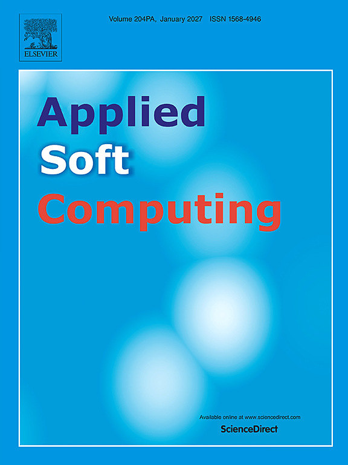
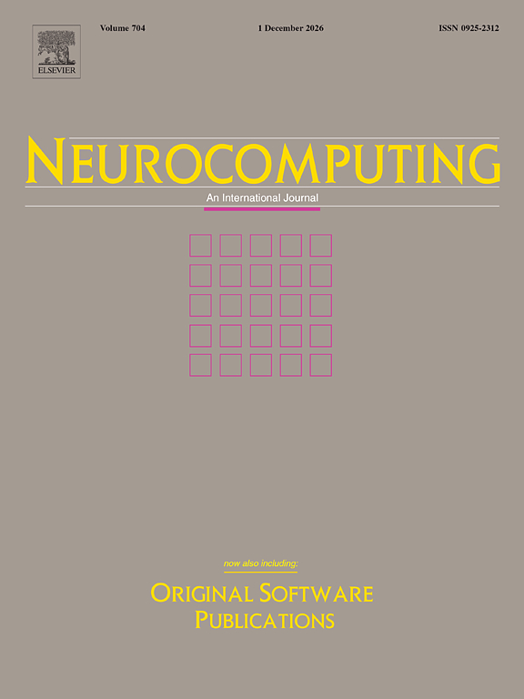

Kyungpook National University · CSE
SOCAL Lab
Statistical Optimization & Collaborative AI Learning
The lab
The SOCAL Lab, led by Nathaniel Kang in the Department of Computer Science and Engineering (CSE), Kyungpook National University, develops statistical tools and methods for tabular data. While vision and language receive substantial attention, tabular domains remain underexplored despite presenting steep practical challenges: sample sizes are often small, columns combine categorical and numerical features, and values are frequently missing. To address these difficulties, we design statistical methods—including synthetic data generation and federated learning—tailored to settings where sensitive tables cannot be pooled across sites, regression targets concentrate in rare tail distributions, and deployed models require dependable AI alignment.
We are actively recruiting motivated Master's and Ph.D. students. If you are interested, please review our Prospective Students page and contact natekang@knu.ac.kr.
경북대학교 컴퓨터학부 SOCAL Lab에서는 연합학습, 합성 데이터, 불균형 회귀, AI 정렬을 연구합니다. 석·박사 과정 신입생을 모집 중이오니, 관심 있는 분은 Prospective 페이지를 참고하신 후 natekang@knu.ac.kr로 문의 부탁드립니다.
Latest
Recent acceptances

Applied Soft Computing
Mending the Tail
Residual-zero students for imbalanced regression.
NeurIPS 2026 · Poster
Taming the Tails
Distributionally robust optimization for imbalanced regression.

UAI 2026 · Poster
Conditional diffusion for tabular regression
Imbalanced tabular regression, in the UAI proceedings.

Neurocomputing
Rare but critical
Copula-calibrated augmentation for imbalanced tabular regression.